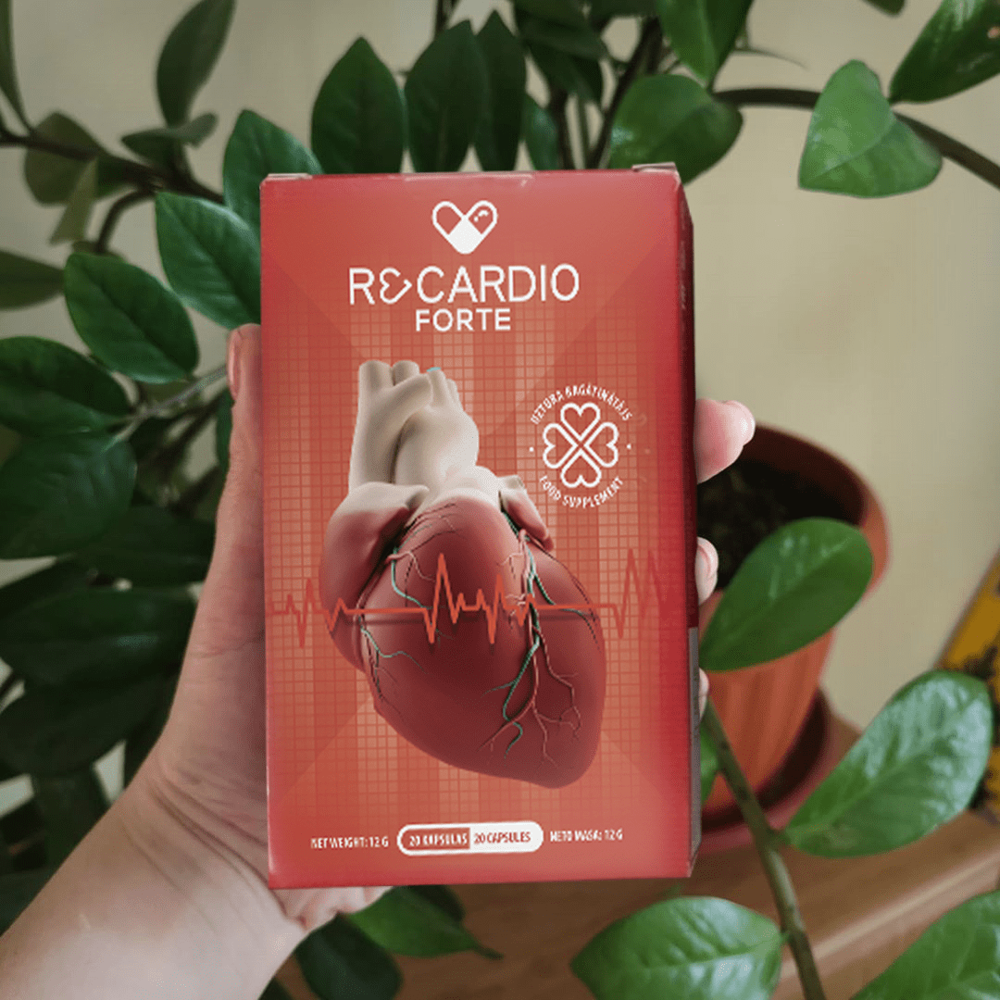

Гипертония – заболевание прошлого
Сердечно-сосудистые заболевания являются ведущими причинами смертности во всем мире. Согласно официальной статистике Всемирной Организации Здравоохранения, на их долю приходится 40% всех глобальных случаев смерти.
Гипертония – патологическое состояние, первопричина 9 случаев инфарктов и инсультов из 10. Тихий убийца, как называют ее медики, ежегодно уносит десятки миллионов жизней.
Борис Левченко – профессор и кардиохирург с сорокалетним стажем рассказал нашей редакции о причинах и особенностях течения гипертонической болезни, а также об инновационном препарате, навсегда побеждающем этот недуг.
— Борис, какие факторы риска развития гипертонии существуют?
— Существует целый ряд факторов развития гипертонической болезни, таких как:
- наследственность
- пол – мужчины страдают от данного заболевания чаще
- возраст старше 35 лет
- стрессы
- употребление алкоголя
- атеросклероз
- курение
- неправильное питание
- гиподинамия
Если вы насчитали у себя более двух факторов, то вероятность заболеть у вас уже очень высока.
— В чем заключается опасность гипертонии?
— Гипертония опасна своими осложнениями: ишемической болезнью сердца с развитием инфаркта миокарда, хронической сердечной недостаточностью, инсультом головного мозга, почечной недостаточностью.
Нужно понимать, что чем выше артериальное давление, тем более тяжелую работу приходится выполнять сердцу для поддержания нормальной циркуляции крови. Поэтому без должного лечения гипертония приводит к утолщению стенок сосудов, их гипертрофии.
При этом сердце начинает работать с перебоями, его стенки истончаются, что приводит к нарушению кровоснабжения тканей. Развивается сердечная недостаточность, то есть неспособность сердца нормально выполнять свою работу.
— Каковы типичные симптомы гипертонии?
— Гипертонию не зря называют «тихим убийцей», ведь зачастую она не дает о себе знать и никак себя не проявляет. Тем не менее, отсутствие симптомов не отменяет фатальных последствий данного заболевания.
В случае проявления симптомов, они включают в себя:
- головные боли
- носовые кровотечения
- нарушения сердечного ритма
- ухудшение зрения
- звон в ушах
Запущенная гипертония вызывает спутанность сознания, боли в груди, мышечный тремор, слабость, тошноту, рвоту и внутреннее напряжение.
— Как лечить гипертонию?
— На сегодняшний день существует огромное количество гипотензивных препаратов. К сожалению, они лишь временно снимают симптомы. Абсолютно большинство популярных средств необходимо принимать пожизненно. Как и другие медикаменты, они неизбежно вызывают привыкание и имеют множество побочных эффектов.
После того, как у меня на руках умерла молодая девушка от кровоизлияния в мозг, я поставил себе цель – разработать препарат, который помог бы избежать таких случаев. В течение 10 лет наш институт занимался разработкой средства, которое могло бы избавить человека от проблемы повышенного давления раз и навсегда.
Нам удалось разработать такой препарат. Средство получило название ReCardio.
— Какие исследования ReCardio были проведены?
— Была проведена оценка терапевтического действия препарата. 1000 добровольцев прошли полный курс приема ReCardio. Вот такие данные мы получили в итоге:
- 98% испытуемых – стабилизация давления в пределах 120/80 в первые часы после приема
- 97% испытуемых – избавились от всех симптомов гипертонии после первых двух недель курсового приема
- 82% испытуемых – отметили отсутствие приступов гипертонии уже после первых трех дней приема
- 80% испытуемых – вне зависимости от стадии заболевания, полностью избавились от гипертонической болезни уже после первого курса ReCardio.
— То есть, ReCardio избавляет от гипертонии полностью раз и навсегда?
— Да, на сегодняшний день это единственный препарат, полностью избавляющий от гипертонии.
— Где можно приобрести этот препарат?
— ReCardio продается в аптеках, но пока доступен не во всех аптечных сетях. Поэтому на базе нашего института был создан временный проект, где пока что Recardio доступен по себестоимости, без наценок перекупщиков.
Интересная статья
Страдаю от гипертонии уже 10 лет. Перепробовала, наверно, все, что можно – и диеты, и отказ от соли, и лекарства – ничего не помогает. Заказала Recardio, очень на него надеюсь!
Моей маме 70 лет, она гипертоник. В последнее время приступы становились все чаще, регулярно приходилось вызывать скорую. Но благодаря ReCardio, мама наконец-то смогла вернуться к полноценной жизни. Спасибо вам за это средство
Оставила заявку, спасибо!
У моего папы гипертония, он постоянно на таблетках. Заказала ему Recardio
Спасибо!
у меня иногда бывает, что кружится голова, мелькает в глазах, сердце стучит. Давление 130/95 в такие моменты. Не сильно досаждает, конечно, но неприятно
И у меня только время от времени. Но, как сказала первый доктор из статьи – давление можно просто не замечать. Оно может проявлять себя время от времени симптомами, а в остальных случаях «молчать». Так что лечиться нужно обязательно. Оставила заявку на сайте
Да, лечиться нужно…
Очень полезная информация, спасибо